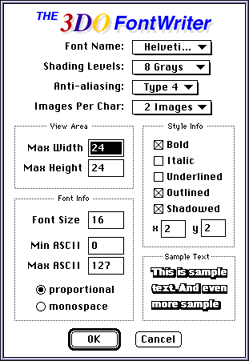

You can select any font in your Macintosh Fonts folder. If you select additional style or other options, the tool applies those options at the same time it creates the 3DO anti-aliased font.

Figure 1: The 3DO FontWriter window.
Table 1: FontWriter window options.
-------------------------------------------------------------
Option |Effect
-------------------------------------------------------------
Font Name |A pop-up menu lets you select a
|Macintosh System folder font. Before
|using a font on the 3DO Station, make
|sure you have the right to do so (some
|TrueType and ATM fonts are protected).
-------------------------------------------------------------
Shading |Eight levels of gray currently are
Levels |available.
-------------------------------------------------------------
Anti-aliasing |Higher numbers result in a larger
|anti-aliased border around most
|characters. Experiment to find the best
|level for your needs.
-------------------------------------------------------------
Images per |Choose one image per character, or two
Char |images to define a shadowed or outlined
|font. The final 3DO font combines both
|images into one.
-------------------------------------------------------------
Max Width / |Determines the size (in pixels) of the
Max Height |Character Edit window view area. Choose
|a width larger than the font size,
|especially for a style that can result
|in a wider font. Fonts are saved at the
|character width and height, not Max
|Width and Max Height.
-------------------------------------------------------------
Font SizeMin |Determines the point size of the font
ASCII/ Max |the 3DO FontWriter creates. Lets you
ASCIIproportional |specify the range of font ASCII values.
/monospace |Change these values if you don't want to
|load the first 20 or the last 10
|characters of a certain font. For
|further customization, load a subset
|file, as explained under "The Special
|Menu" below.Lets you specify whether
|character is equal or variable.
-------------------------------------------------------------
Style Info |Contains check boxes for bold, italic,
|underline, outline, and shadowed styles.
|If you choose a shadowed font, two input
|windows appear for specifying the
|shadow's x-offset and y-offset.
-------------------------------------------------------------